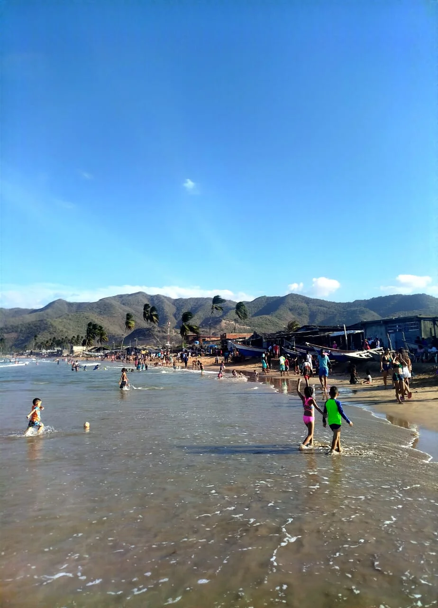
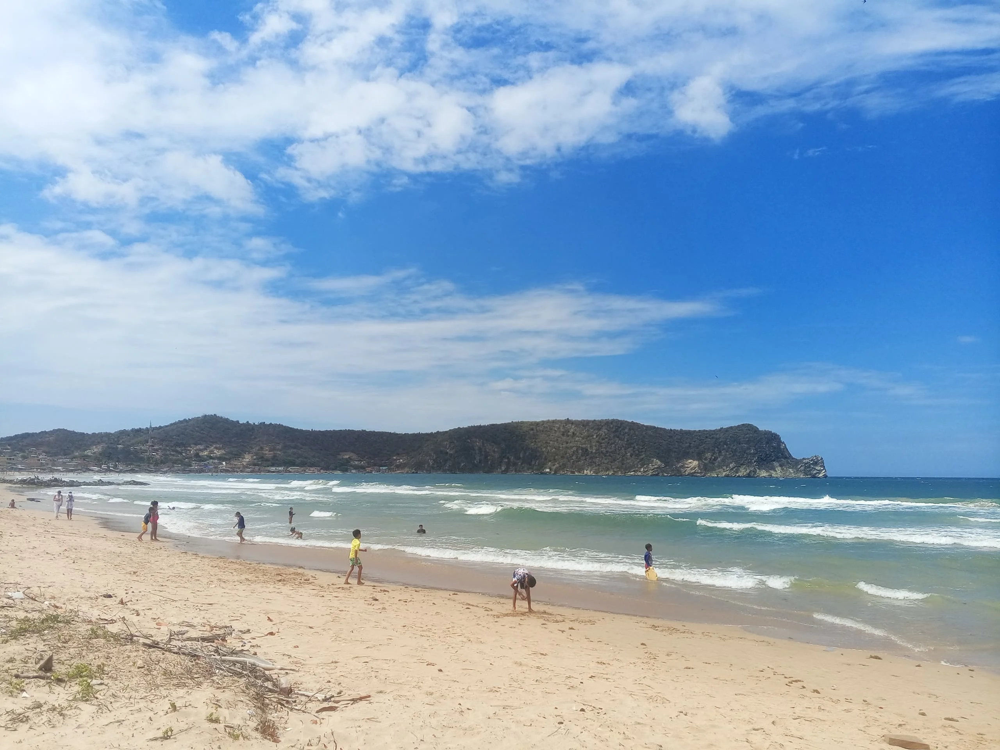
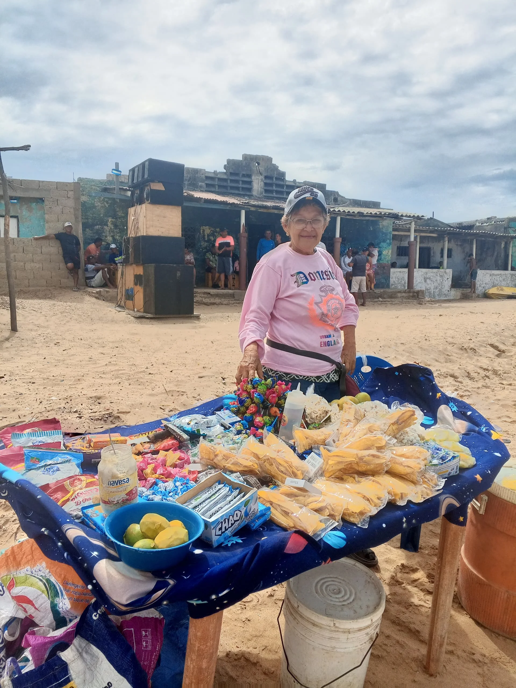
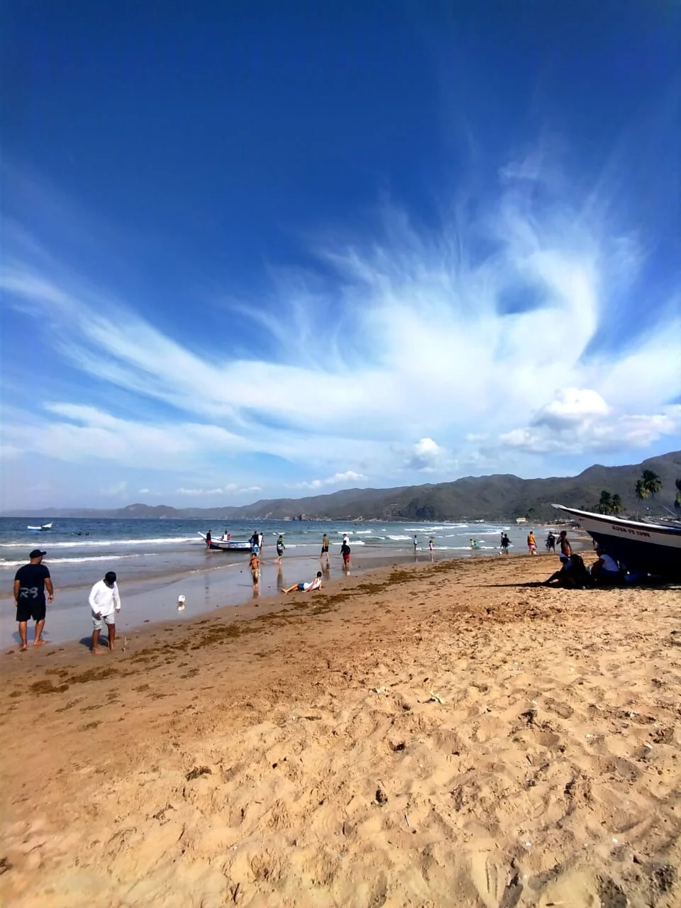
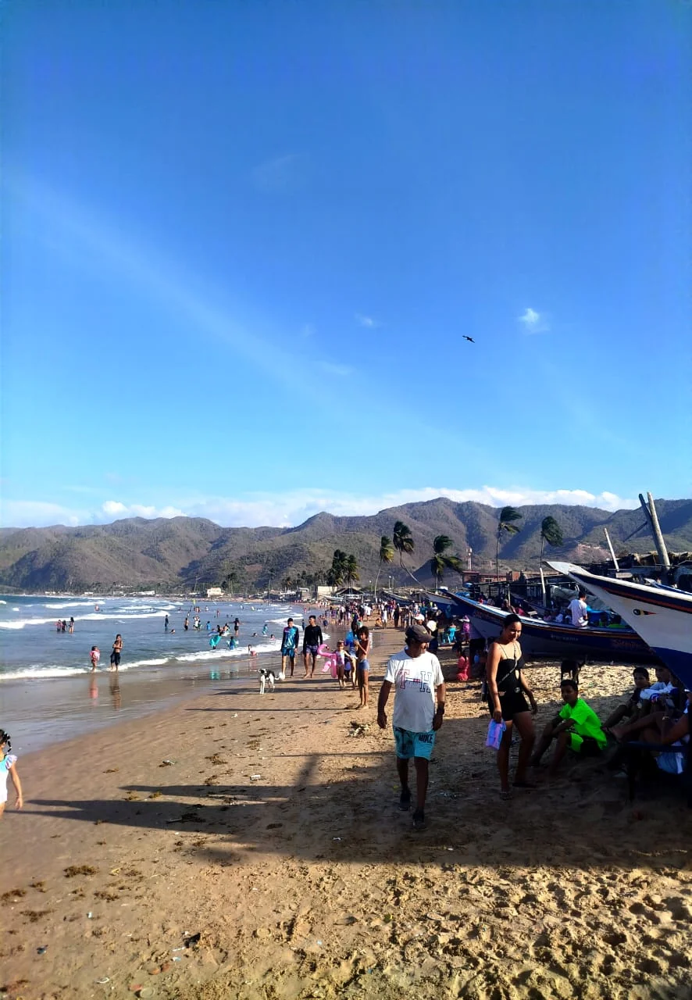
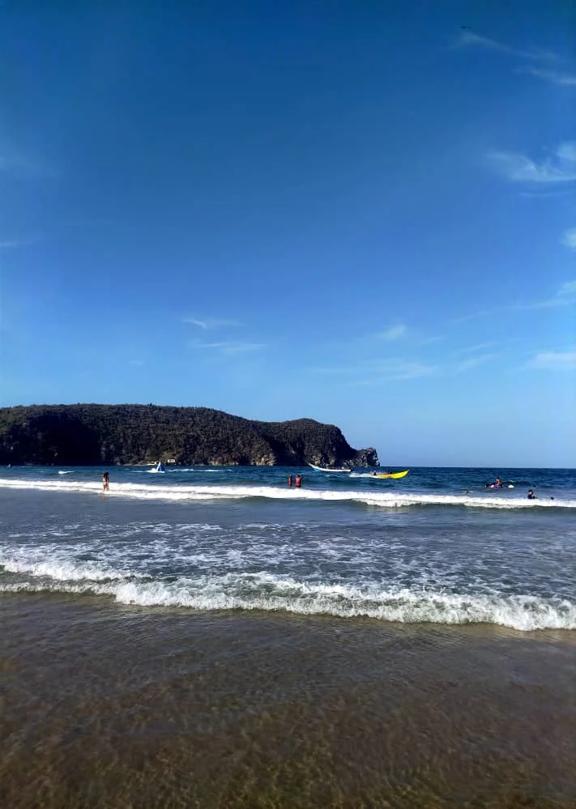

Ubicada en el sector de El Morro de Puerto Santo, Playa Caña Brava funciona como un segmento específico y muy concurrido dentro de la extensión de Playa Arriba. Visualmente, el paisaje se define por una costa de aguas claras y oleaje moderado, flanqueada a un costado por las formaciones montañosas características de la zona que caen hacia el mar. Es un espacio abierto que recibe una afluencia constante de visitantes, consolidándose como un destino práctico para quienes buscan disfrutar del litoral sin alejarse de las zonas de mayor actividad del pueblo.




La playa mantiene un pulso constante gracias a la afluencia de visitantes y la presencia de la comunidad local. Es habitual observar el movimiento de embarcaciones de pesca a lo largo de la costa, reflejando la actividad económica de la zona. Además, se encuentran puestos de venta informal que ofrecen productos y snacks, sumando opciones para los bañistas. La interacción es constante, convirtiendo a este tramo en un lugar ideal para quienes disfrutan de la playa en un entorno social y funcional.

Cómo Llegar
Se ubica en el centro de Playa Arriba, justo en el sector Union de las 3c donde se encuentra el Bar Cocoye.
Mejores Días
Los fines de semana son ideales para quienes buscan el ambiente más activo y social de la zona.
¿Por Qué Visitarla?
Por su combinación de aguas tranquilas, facilidad de acceso a servicios y la cercanía inmediata al Bar Cocoye.
La Playa de Caña Brava
Un elemento clave que define la popularidad de este sector es su ubicación inmediata al bar "Cocoye", situado a orillas de la playa. La presencia de este establecimiento genera un flujo constante de personas y facilita el acceso a servicios de comida y bebidas sin necesidad de retirarse de la franja costera. Esta cercanía convierte a Caña Brava en el sitio predilecto para grupos que buscan un día de playa activo, donde la recreación en el agua se complementa directamente con la oferta comercial del local.
